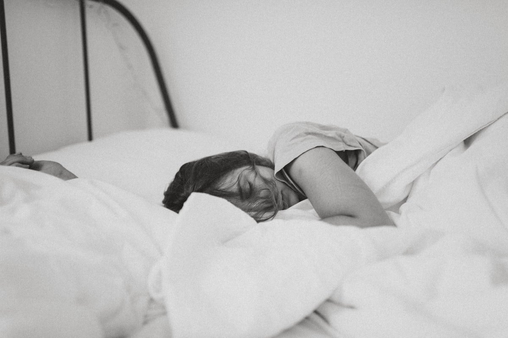

How to Reduce Anxiety Naturally: 10 Proven Techniques

Anxiety affects over 300 million people worldwide. While medication is appropriate for some, many people find relief through evidence-based natural techniques — often with lasting results that medication alone can't provide.
Here are 10 proven techniques that can meaningfully reduce anxiety, backed by research and used by therapists worldwide.
1. Breathing Exercises
Your breath is the fastest tool for calming anxiety. When you're anxious, your breathing becomes shallow and rapid, keeping your body in fight-or-flight mode. Controlled breathing reverses this.
Best techniques for anxiety:
- 4-7-8 Breathing: The extended exhale is deeply calming. Four cycles can stop a panic attack in its tracks
- Box Breathing: Equal intervals create a sense of control. Used by Navy SEALs to stay calm under pressure
- Alternate Nostril Breathing: Balances left and right brain hemispheres, promoting equilibrium
2. Meditation
Meditation is one of the most well-researched tools for anxiety relief. An 8-week mindfulness program reduced anxiety symptoms by 58% in one study. The key mechanism is learning to observe anxious thoughts without engaging with them.
Research shows that regular meditation physically shrinks the amygdala — your brain's anxiety center — while strengthening the prefrontal cortex, which helps regulate emotional responses.
Start with just 5 minutes of guided meditation daily. Even brief sessions create measurable changes in brain activity.
3. Progressive Muscle Relaxation
Anxiety lives in your body as much as your mind. Progressive muscle relaxation (PMR) systematically releases physical tension, which in turn calms mental anxiety.
- Start with your feet — tense the muscles for 5 seconds
- Release completely and notice the contrast for 10 seconds
- Move upward: calves, thighs, abdomen, chest, hands, arms, shoulders, face
- Breathe slowly throughout
PMR is especially effective before bed when anxiety tends to spike. A body scan meditation guides you through a similar process with less physical effort.
4. Physical Exercise
Exercise is a potent natural anxiolytic. A single 30-minute session of moderate exercise reduces anxiety for several hours. Regular exercise can be as effective as medication for mild to moderate anxiety.
The mechanism is biological: exercise burns excess adrenaline and cortisol, releases endorphins, and improves sleep quality. You don't need intense workouts — even walking, yoga, or gentle stretching helps.
5. Limit Caffeine
Caffeine triggers the same physiological responses as anxiety: increased heart rate, elevated cortisol, and heightened alertness. For anxiety-prone people, even moderate caffeine can trigger or worsen symptoms.
Try reducing to one cup before noon, or switch to green tea (lower caffeine with calming L-theanine). Many people report significant anxiety reduction within a week of cutting caffeine.
6. Sleep Hygiene
Anxiety and poor sleep feed each other in a vicious cycle. Sleep deprivation increases activity in the amygdala by up to 60%, making you more reactive to perceived threats.
Prioritize 7-9 hours of sleep with good habits: consistent bedtime, cool dark room, no screens 30 minutes before bed, and calming bedtime routines like sleep stories or ASMR.
7. Journaling
Writing down anxious thoughts externalizes them. Research shows that expressive writing reduces intrusive thoughts and improves working memory — freeing mental space from the constant loop of worry.
Two effective approaches:
- Worry dump: Write every anxious thought for 10 minutes, then close the notebook. This signals to your brain that the worries have been "captured" and can be let go
- Gratitude journal: Writing 3 things you're grateful for daily has been shown to reduce anxiety and improve mood over time
8. Nature Exposure
Spending time in nature reduces cortisol, heart rate, and blood pressure. Japanese researchers found that 20 minutes of "forest bathing" (simply being in a natural environment) significantly reduced stress hormones.
If you can't get outdoors, nature sounds and soundscapes can provide some of the same benefits. The key is disconnecting from digital stimulation and engaging with natural sensory input.
9. The 5-4-3-2-1 Grounding Technique
This technique pulls you out of anxious rumination and into the present moment:
- 5 things you can see
- 4 things you can touch
- 3 things you can hear
- 2 things you can smell
- 1 thing you can taste
By engaging all five senses, you redirect your brain from future-focused anxiety to present-moment awareness. It's simple, fast, and works almost anywhere.
10. Mood Tracking
Tracking your anxiety patterns helps you identify triggers and see progress. Over time, you'll notice which situations, times of day, or habits correlate with higher or lower anxiety.
Simple mood check-ins — rating your anxiety level and noting what you were doing — can reveal surprising patterns. Many people discover that their anxiety has specific, addressable triggers they weren't consciously aware of.
When to Seek Professional Help
Natural techniques are powerful, but they're not always sufficient. Consider speaking with a mental health professional if:
- Anxiety significantly impacts your daily life, work, or relationships
- You experience frequent panic attacks
- You've tried self-help techniques consistently for a month without improvement
- You use alcohol or substances to manage anxiety
- You have thoughts of self-harm
These techniques work well alongside professional treatment. Many therapists teach the same methods as part of cognitive behavioral therapy (CBT).
Your Anxiety Toolkit in One App
Breathe includes all 5 breathing techniques, 130+ guided meditations, mood tracking with insights, body scan, and an AI wellness companion — everything you need to manage anxiety naturally.
Try Breathe Free for 3 DaysThe Bottom Line
Anxiety is manageable. The techniques above are used by therapists, backed by research, and practiced by millions. You don't need to try all ten — start with breathing exercises and meditation, then add techniques that resonate with you.
The most important thing is consistency. A few minutes of daily practice creates compound benefits that build over weeks. Your future self will thank you for starting today.